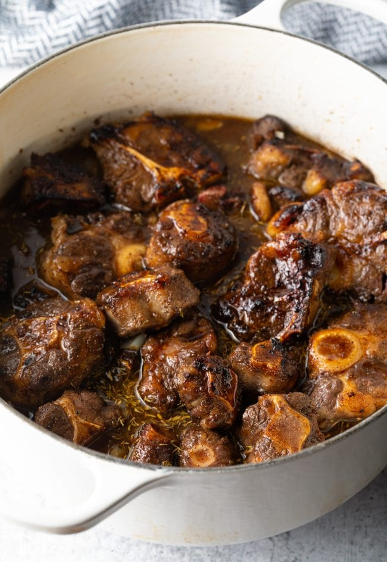

Jamaican Jerk Oxtail

Description
Jamaican Jerk Oxtail is a flavorful and tender dish made with oxtail, jerk
seasoning, and a hint of allspice. It's a perfect meal for special
occasions or family gatherings.
- 2 pounds oxtail
- 2 tablespoons jerk seasoning
- 1 tablespoon brown sugar
- 2 tablespoons soy sauce
- 2 tablespoons lime juice
- 2 tablespoons vegetable oil
- 1 small onion, chopped
- 3 cloves garlic, minced
- 1 scotch bonnet pepper (optional)
- 2 teaspoons ground allspice
- 1 teaspoon dried thyme
- 1/2 teaspoon ground cinnamon
- 1/4 teaspoon ground nutmeg
- 1/4 teaspoon ground cloves
- Salt and black pepper to taste
- Beef broth or stock (optional)
Steps
-
Heat the oil in a large Dutch oven over medium-high heat. Brown the
oxtail on all sides, then remove it from the pot.
-
Add the onion, garlic, and scotch bonnet pepper (if using) to the pot
and stir-fry until softened.
-
Add the jerk seasoning, brown sugar, soy sauce, lime juice, allspice,
thyme, cinnamon, nutmeg, and cloves. Stir to combine and bring to a
boil.
-
Return the oxtail to the pot and cover with a lid. Transfer to the oven
and cook for 2-3 hours, or until the meat is tender and falls apart
easily.
-
Remove the pot from the oven and season with salt and black pepper to
taste. Serve hot, garnished with chopped scallions and served with rice
or roti.